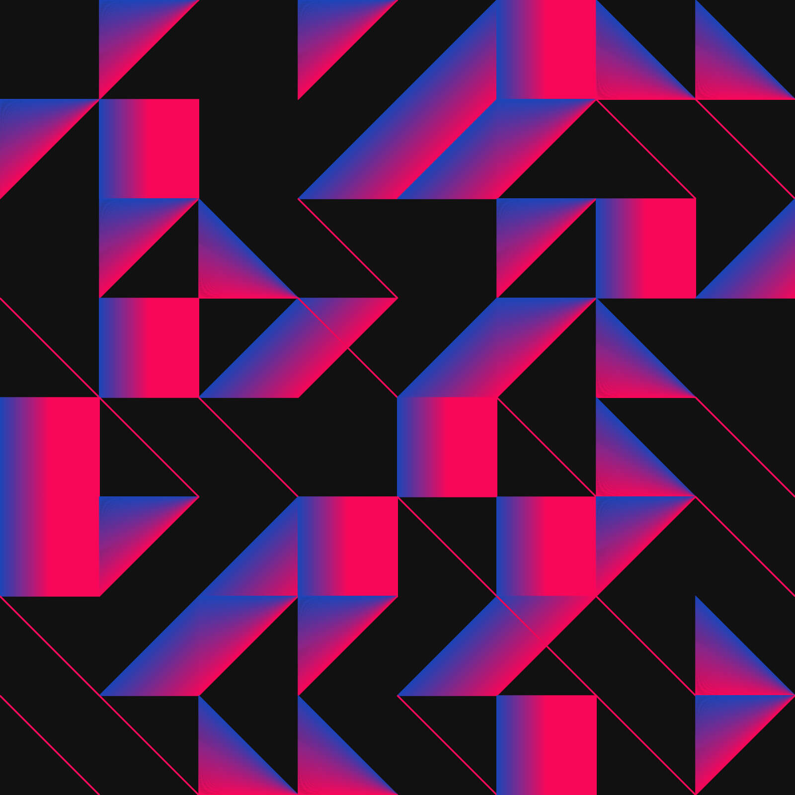
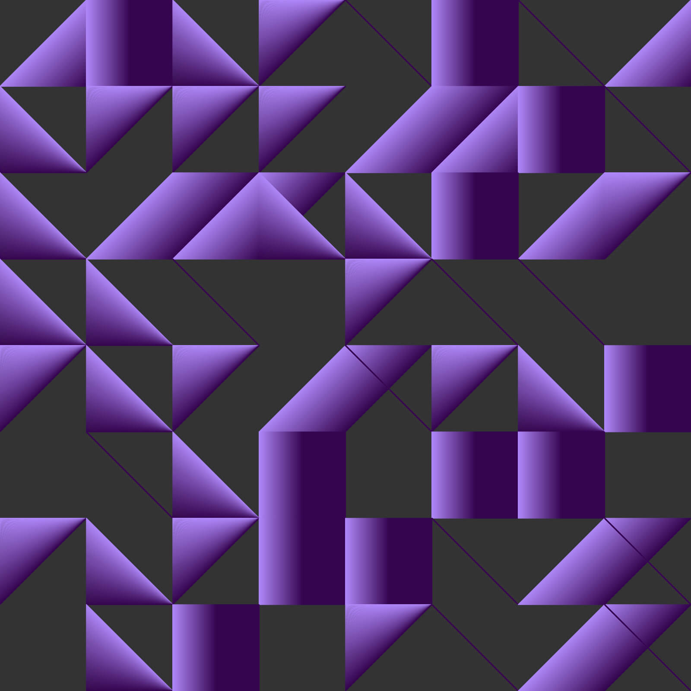
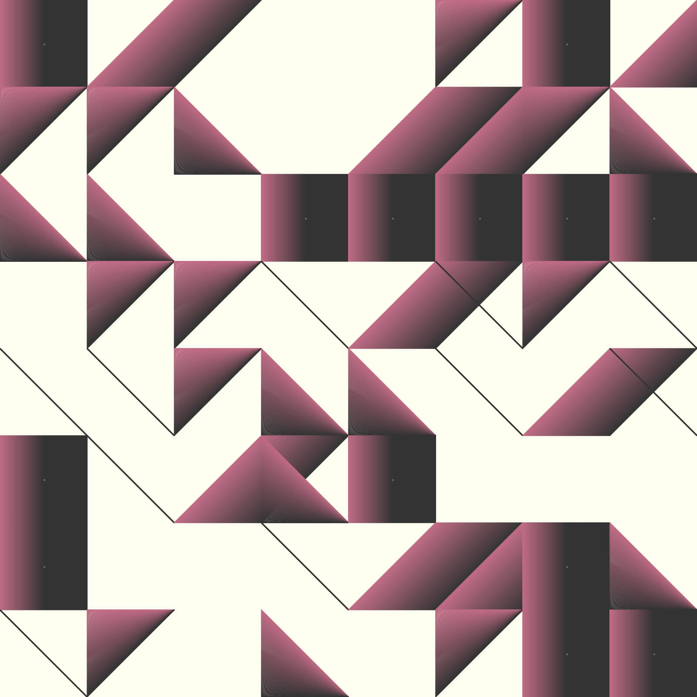
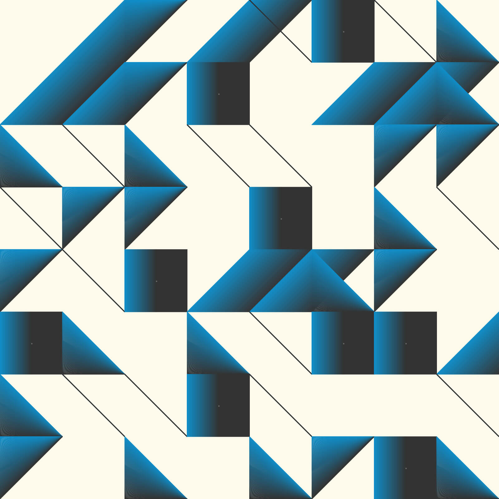

Over the weekend I did some more tinkering with generating patterns with Processing. The following were created using simple sets of coordinates identifying lines and shapes on a grid, which were then told to repeat at intervals.

An exploration of form, strokes, and colors on a canvas, inspired by the famous tiles in Lisbon.


